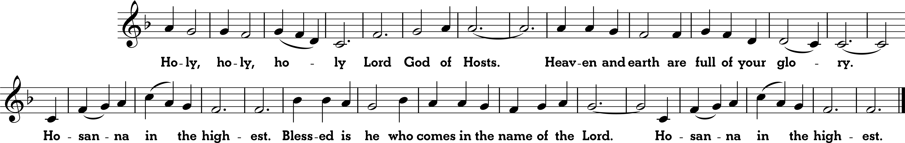

Twenty-ninth Sunday in Ordinary Time
Sunday 9 am and 12 noon Masses
Twenty-ninth Sunday in Ordinary Time
Sunday 9 am and 12 noon Masses
Prelude “Magnificat in A minor” Jean-François Dandrieu (1682-1738); 12: “Where two or three are gathered” (PA)


Thus says the LORD to his anointed, Cyrus, whose right hand I grasp, subduing nations before him, and making kings run in his service, opening doors before him and leaving the gates unbarred: For the sake of Jacob, my servant, of Israel, my chosen one, I have called you by your name, giving you a title, though you knew me not. I am the LORD and there is no other, there is no God besides me. It is I who arm you, though you know me not, so that toward the rising and the setting of the sun people may know that there is none besides me. I am the LORD, there is no other.
Paul, Silvanus, and Timothy to the church of the Thessalonians in God the Father and the Lord Jesus Christ: grace to you and peace. We give thanks to God always for all of you, remembering you in our prayers, unceasingly calling to mind your work of faith and labor of love and endurance in hope of our Lord Jesus Christ, before our God and Father, knowing, brothers and sisters loved by God, how you were chosen. For our gospel did not come to you in word alone, but also in power and in the Holy Spirit and with much conviction.
The Pharisees went off and plotted how they might entrap Jesus in speech. They sent their disciples to him, with the Herodians, saying, "Teacher, we know that you are a truthful man and that you teach the way of God in accordance with the truth. And you are not concerned with anyone's opinion, for you do not regard a person's status. Tell us, then, what is your opinion: Is it lawful to pay the census tax to Caesar or not?" Knowing their malice, Jesus said, "Why are you testing me, you hypocrites? Show me the coin that pays the census tax." Then they handed him the Roman coin. He said to them, "Whose image is this and whose inscription?" They replied, "Caesar's." At that he said to them, "Then repay to Caesar what belongs to Caesar and to God what belongs to God."
Homily + Profession of Faith
I believe in one God, the Father almighty,
maker of heaven and earth,
of all things visible and invisible.
I believe in one Lord Jesus Christ,
the Only Begotten Son of God,
born of the Father before all ages.
God from God, Light from Light, true God from true God,
begotten, not made, consubstantial with the Father;
through him all things were made.
For us men and for our salvation he came down from heaven,
and by the Holy Spirit was incarnate of the Virgin Mary,
and became man.
For our sake he was crucified under Pontius Pilate,
he suffered death and was buried,
and rose again on the third day
in accordance with the Scriptures.
He ascended into heaven
and is seated at the right hand of the Father.
He will come again in glory to judge the living and the dead
and his kingdom will have no end.
I believe in the Holy Spirit, the Lord, the giver of life,
who proceeds from the Father and the Son,
who with the Father and the Son is adored and glorified,
who has spoken through the prophets.
I believe in one, holy, catholic and apostolic Church.
I confess one Baptism for the forgiveness of sins
and I look forward to the resurrection of the dead
and the life of the world to come. Amen.
Prayer of the Faithful + Offertory
+ Liturgy of the Eucharist +
May the Lord accept the sacrifice at your hands,
for the praise and glory of his name, for our good, and the good of all his holy Church.



+ Our Father +
Our Father, who art in heaven, hallowed be thy name; thy kingdom come, thy will be done on earth as it is in heaven.
Give us this day our daily bread, and forgive us our trespasses, as we forgive those who trespass against us;
and lead us not into temptation, but deliver us from evil.
Deliver us Lord from every evil, graciously grant peace in our day, that by the help of your mercy we may be always free from sin
and safe from all distress, as we await the blessed hope, and the coming of our Savior, Jesus Christ.
For the kingdom, the power and the glory are yours now and for ever.
+ Sharing of Peace +

Lord, I am not worthy that you should enter under my roof, but only say the word and my soul shall be healed.


Queen, mother of mercy: our life, sweetness, and hope, hail. To thee do we cry, poor banished children of Eve.
To you we sigh, mourning and weeping in this va ley of tears.
Turn then, our advocate, those merciful eyes toward us. And Jesus, the blessed fruit of thy womb, after our exile, show us.
O clement, O loving, O sweet Virgin Mary
"St. Michael the Archangel, defend us in battle. Be our protection against the wickedness and snares of the devil.
May God rebuke him, we humbly pray; and do thou, O Prince of the heavenly hosts, by the power of God,
cast into hell Satan and all the evil spirits who prowl about the world seeking the ruin of souls. Amen."

Postlude “Trio Sonata in Eb Major (442) - III” J.L. Krebs (1713-1780)